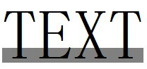

RD1011: IE6 IE7 IE8(Q) 中行内非替换元素中的非文本文字会撑高其高度
作者：武利剑
标准参考
行内非替换元素高度值的计算法则
行内非替换元素的高度值应该以字体为依据。
虽然以字体为依据，但是这个规格没有详细的指定应该怎样计算，浏览器可以应用 em-box ，或者根据字体最大的高度（ the maximum ascender and descender of the font ）来确定这个值。
关于行内元素高度的计算法则，请参考 CSS2.1 规范 10.6.1 中的内容。
问题描述
IE6 IE7 IE8(Q) 中行内非替换元素中的非文本文字可能会撑高其高度。
造成的影响
可能会导致局部布局混乱。
受影响的浏览器
| IE6 IE7 IE8(Q) |
|---|
问题分析
在 IE6 IE7 IE8(Q) 中，一个行内非替换元素的内容高度将被其子元素撑大（如设置了较大 'font-size' 的子元素或一个较大的图片）。
分析以下代码：
<span id="C" style="font-size:20px; background-color:gray;"> <div id="I" style="display:inline;font-size:100px;">TEXT</div> </span>
- C 的 'font-size' 值为 '20px' ，为了观察方便，设置其背景色为灰色；
- I 用 DIV 设置 'display:inline' 来表示，为了表明 I 也可以是其他的行内元素。
根据 CSS2.1 规范中行内非替换元素高度值的计算法则可知，以上代码片段中行内非替换元素 C 的高度值应决定于其 'font-size' 特性。所以，灰色背景区域不能完全包含 I 中的文本 'TEXT'。
这段代码在不同的浏览器环境中表现如下：
| IE6 IE7 IE8(Q) | IE8(S) Firefox Opera Safari Chrome |
|---|---|
 |
 |
将 C 的 'font-size' 设置为 '50px' 后：
| IE6 IE7 IE8(Q) | IE8(S) Firefox Safari Chrome Opera |
|---|---|
 |
可见，在 IE6 IE7 IE8(Q) 中，高度较大的行内元素将包含它的行内非替换元素的高度撑大了。 这是的一个 BUG ，触发它的条件是：
- 该元素是一个行内非替换元素。
- 该元素包含一个行内元素。
- 该元素包含的行内元素的高度大于该元素的高度。
解决方案
针对不同的需求，可以采取不同的解决方案，例如，将外层的行内元素改为一个块级元素、给外层行内元素设置 'display:inline-block'、给外层行内元素设置合适的 'font-size' 值等。
可供参考的解决方案如下：
- 如果仅仅是需要高度一样，不需要考虑其对布局的影响，那么将外层的行内元素改为一个块级元素。
- 给外层行内元素设置 'display:inline-block' ，这样支持 'inline-block' 的浏览器会根据所包含的行内元素的高自动调整高度， IE6 E7 IE8(Q)中虽然不支持此属性，但是会触发上述 BUG ，也会撑开外层行内元素高度。
- 给外层行内元素设置合适的 'font-size' 值。
参见
知识库
相关问题
测试环境
| 操作系统版本: | Windows 7 Ultimate build 7600 |
|---|---|
| 浏览器版本: |
IE6 IE7 IE8 Firefox 3.6.6 Chrome 6.0.447.0 dev Safari 5.0 Opera10.51 |
| 测试页面: | inline_element_height.html |
| 本文更新时间: | 2010-06-28 |
关键字
height inline level non-replaced elements font-size